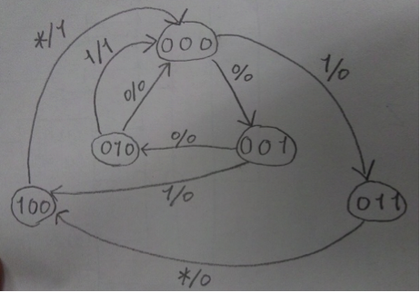

状態をS2S1S0の3bitで表すとする。
入力はA、出力はOとし、A/Oと状態遷移図上に表記する。
クロック入力は省略する。
000 : クロック数mod3の値が０の時。つまり３クロック周期の0クロック目。
001 : 1クロック目。A入力無し。
010 : 2クロック目。A入力無し。
011 : 1クロック目。A入力あり。
100 : 2クロック目。A入力あり。
(1)の図が既に最少の状態数。
| A | S2 | S1 | S0 | nextS2 | nextS1 | nextS0 | O |
| 0 | 0 | 0 | 0 | 0 | 0 | 1 | 0 |
| 0 | 0 | 0 | 1 | 0 | 1 | 0 | 0 |
| 0 | 0 | 1 | 0 | 0 | 0 | 0 | 0 |
| 0 | 0 | 1 | 1 | 1 | 0 | 0 | 0 |
| 0 | 1 | 0 | 0 | 0 | 0 | 0 | 1 |
| 1 | 0 | 0 | 0 | 0 | 1 | 1 | 0 |
| 1 | 0 | 0 | 1 | 1 | 0 | 0 | 0 |
| 1 | 0 | 1 | 0 | 0 | 0 | 0 | 1 |
| 1 | 0 | 1 | 1 | 1 | 0 | 0 | 0 |
| 1 | 1 | 0 | 0 | 0 | 0 | 0 | 1 |
状態 101,110,111はDon’t Care。
※最初のnextS2は無視推奨
Dフリップフロップ回路は、上からS2,S1,S0を表すものとする。